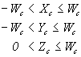

The results of the projection matrix determine the clipping volume in projection space. Microsoft® Direct3D® defines the clipping volume in projection space as:

In the preceding formulas, Xc, Yc, Zc, and Wc represent the vertex coordinates after the projection transformation is applied. Any vertices that have an x, y, or z component outside these ranges are clipped.